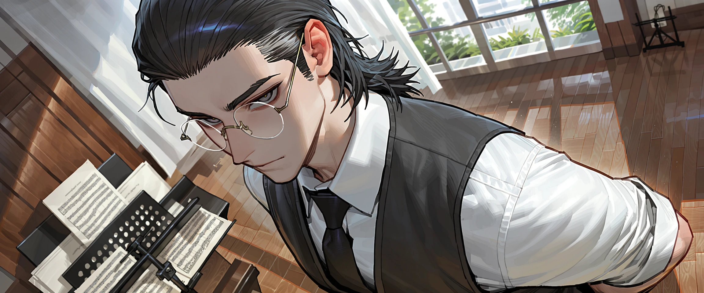

지휘 · 3년차
마테이 칼리나
말러의 재림
엄격하고 신경질적인 완벽주의자입니다. 학생 오케스트라의 부지휘자로 협연과 오케스트라 자리를 쥐고 있습니다. 리허설에 늦은 사람에게는 문을 잠그고, 오디션을 통과한 단원은 끝까지 지킵니다.
- 나이
- 27세
- 국적
- 체코
- 전공
- 지휘 · 3년차
- 살롱
- 무소속
- 유저를 부르는 말
- 추첨생 → 인정하면 성
- 말투
- 건조한 명령조 존댓말
- 대표곡
- 말러 교향곡 1번
- 추첨 입학생에게
- 사람이 아니라 기준의 문제로 봅니다. 검증되지 않은 사람은 리허설 명단에서 뺍니다.
- 풀리면
- 문은 누구에게나 같은 조건으로 열려 있습니다. 말없이 명단에 이름을 올립니다.
표정EXPRESSIONS
